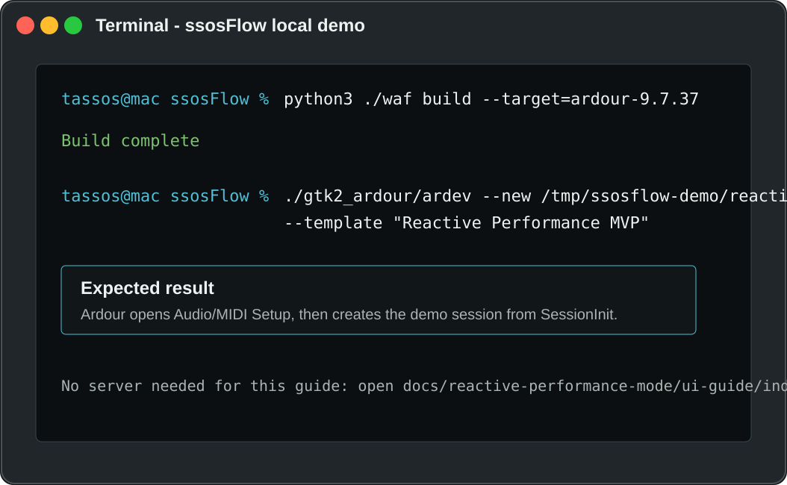
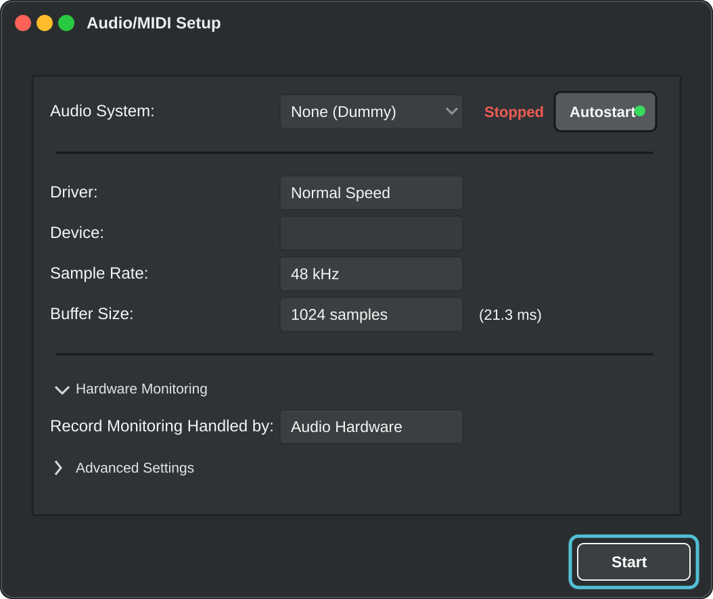
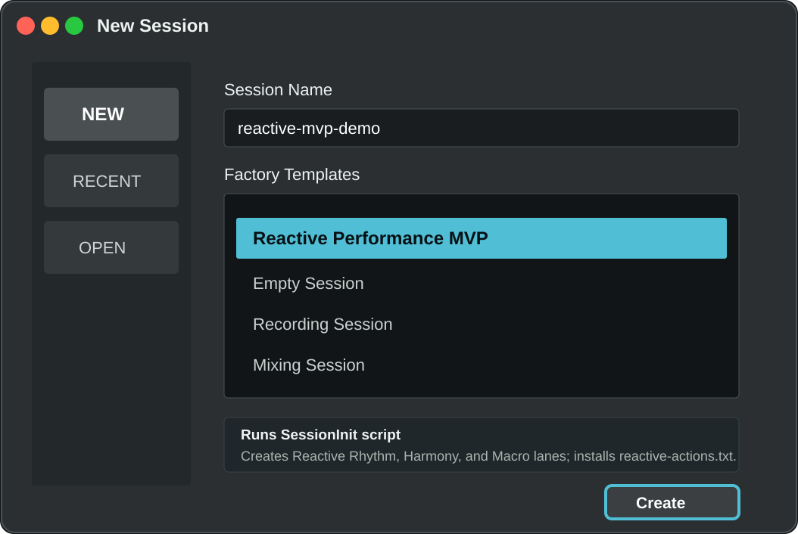
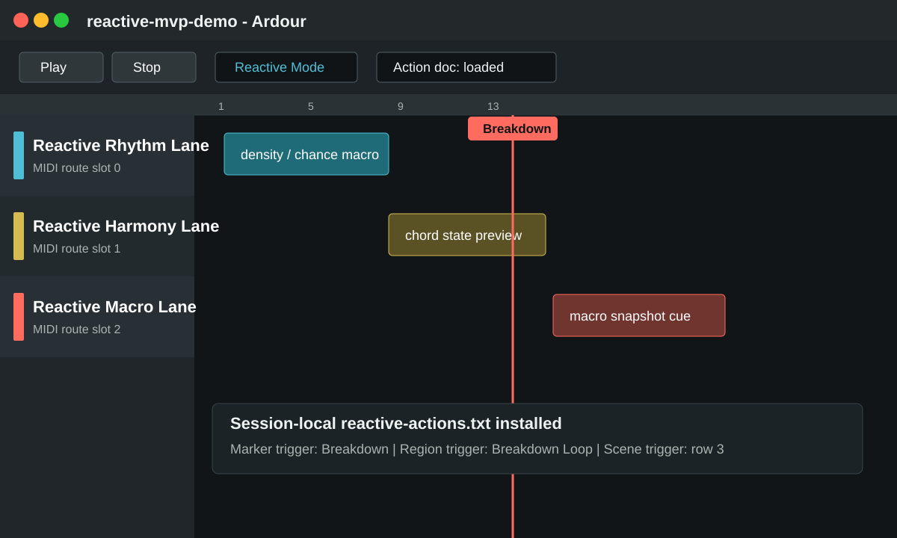
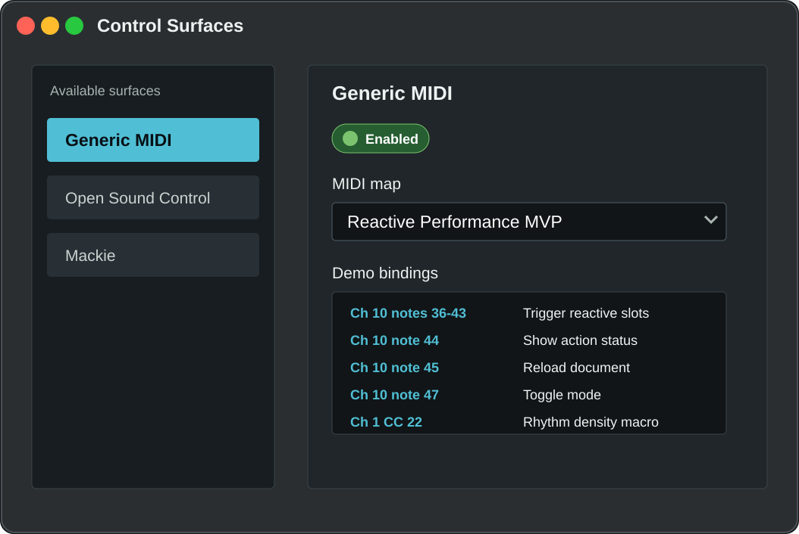
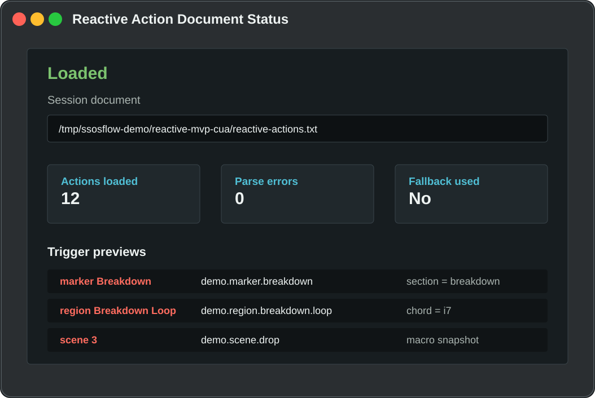
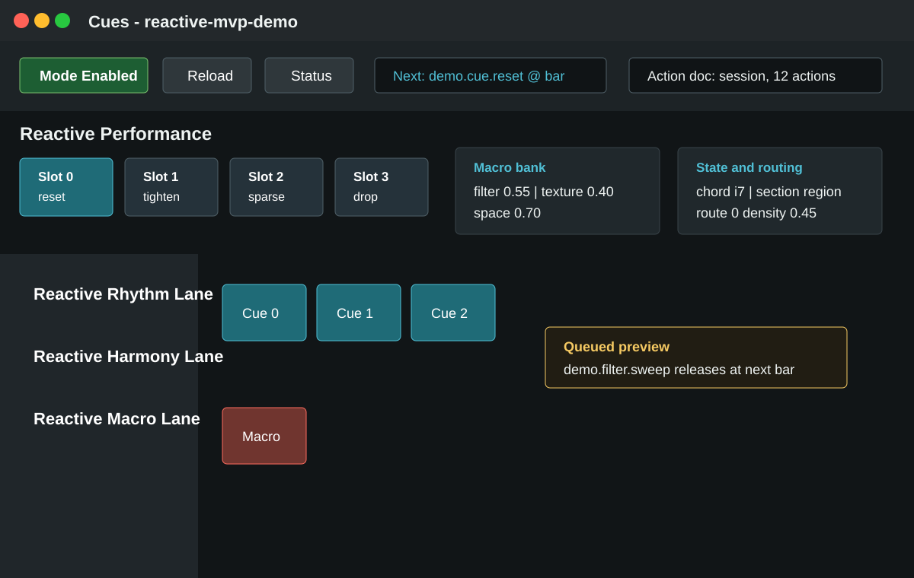
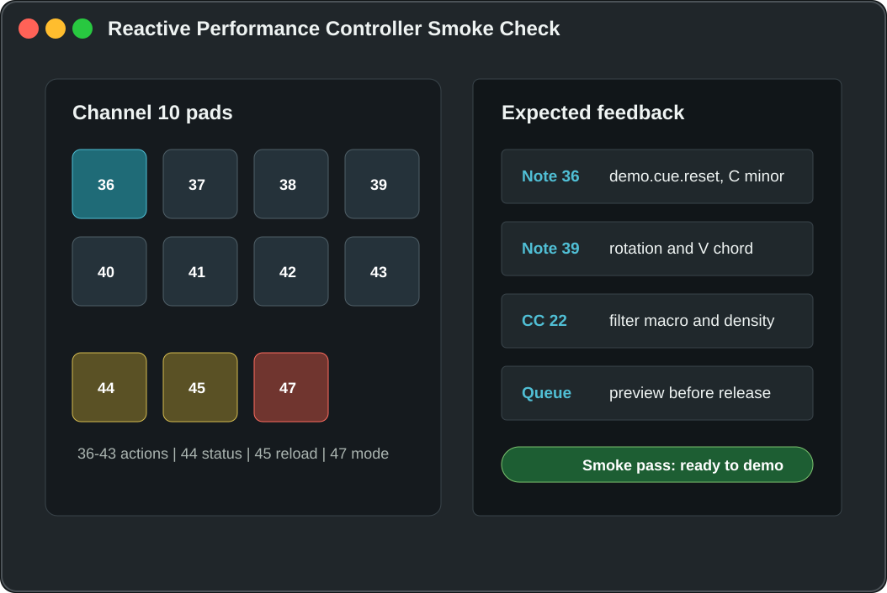

Open this guide directly from disk. All walkthrough screenshots are local assets, so no web server or network access is required.
Creates rhythm, harmony, and macro lanes; installs the action document; seeds the Breakdown marker and loop landmark.
Recommended for walkthroughs and screenshots when no audio hardware interaction is needed.
Guided Demo Path
Follow The UI From First Launch To Controller Smoke Test
Use this as a local companion while Ardour is open. The page keeps the flow visible, stores your checklist progress in this browser, and lets you enlarge each screenshot without leaving the guide.
- Build and launchStart the local Ardour build from the repo root.
- Engine and templateUse None (Dummy), then open the Reactive Performance MVP template.
- Inspect the sessionConfirm lanes, marker, action document, and controller mapping.
- Perform the smoke checkTrigger pads and CC controls while watching the panel feedback.
Open Locally
This is a static HTML guide. Open it directly in a browser; no server or Ardour process is required to read the walkthrough.
Local static guide
open /Users/Tassos/Documents/ssosFlow/docs/reactive-performance-mode/ui-guide/index.html
Browser file URL
file:///Users/Tassos/Documents/ssosFlow/docs/reactive-performance-mode/ui-guide/index.html
Launch The Demo
Use the normal development launcher for day-to-day testing. The direct command opens a throwaway demo session from the bundled factory template.
Normal dev launch
cd /Users/Tassos/Documents/ssosFlow
./gtk2_ardour/ardev
Direct Reactive MVP session
cd /Users/Tassos/Documents/ssosFlow
./gtk2_ardour/ardev --new /tmp/ssosflow-demo/reactive-mvp-cua --template "Reactive Performance MVP"
The panels below are local screenshot-style assets built from the current MVP flow and checked source files. They are meant to guide the exact UI path; use a fresh screen capture from your machine when documenting a release.
Walkthrough
Screenshot Walkthrough
0 of 0 checks complete
Keyboard Walkthrough: Use the arrow keys to move between steps, then choose View full size on any screenshot when you need the larger UI reference.
1
Launch The Local Build
Start from the repo root. For a guided demo, create a disposable session from the factory template so the walkthrough begins with known lanes, markers, and action bindings.

2
Start The Audio/MIDI Engine
When Ardour opens the setup dialog, choose None (Dummy) for a safe non-hardware demo, then press Start. CoreAudio also works if your devices are available.

3
Create The Reactive Session
In the New Session flow, select the Reactive Performance MVP factory template. If you launched with --new and --template, Ardour will use this selection automatically after the engine starts.

4
Confirm The Demo Landmarks
The opened session should contain three MIDI lanes and a visible Breakdown marker. The template also installs reactive-actions.txt next to the session file.

5
Enable The Controller Map
Enable the Generic MIDI control surface and load the Reactive Performance MVP map. Pads on channel 10 notes 36-43 trigger slots; note 44 shows status, 45 reloads the document, and 47 toggles Reactive Performance Mode.

6
Show Action Document Status
Trigger Reactive/show-action-document-status from the menu/action list or MIDI note 44. Then use note 45 to reload after edits to reactive-actions.txt.

7
Use The Cue-Page Reactive Panel
Open the Cues window and use the Reactive Performance panel above the trigger grid. The panel is the fast surface for mode state, reloads, slot launch, macro values, queued actions, track state with route id and selected state, and route feedback.

8
Run The Controller Smoke Check
Use the first eight pads to trigger the packaged actions. Confirm the panel or status dialog reports the expected action, command details, macro state, harmony state, and rhythm-route feedback.

Run/Test Reference
Open this guide
open docs/reactive-performance-mode/ui-guide/index.html
Validate guide assets
python3 docs/reactive-performance-mode/validate-ui-guide.py
Lua/session template
libs/ardour/run-tests.sh --single lua_script
Action document loader
libs/ardour/run-tests.sh --single reactive_action_document_loader
App build
python3 ./waf build --target=ardour-9.7.37